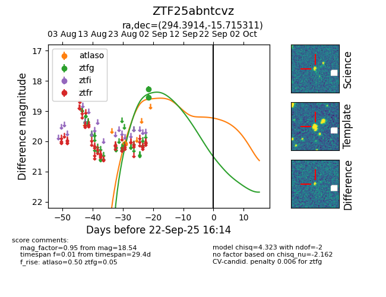
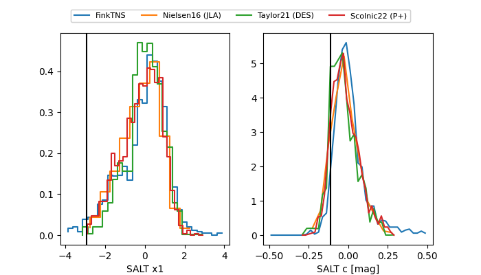

FINK: ZTF25abntcvz
Lasair: ZTF25abntcvz
ALeRCE: ZTF25abntcvz
ZTF25abntcvz (ztf,fink)
equatorial (ra, dec) = (294.3914,-15.71531)
galactic (l, b) = (23.6995,-17.14417)


last atlaso=20.08, ztfg=18.54
1 atlaso, 2 ztfg detections